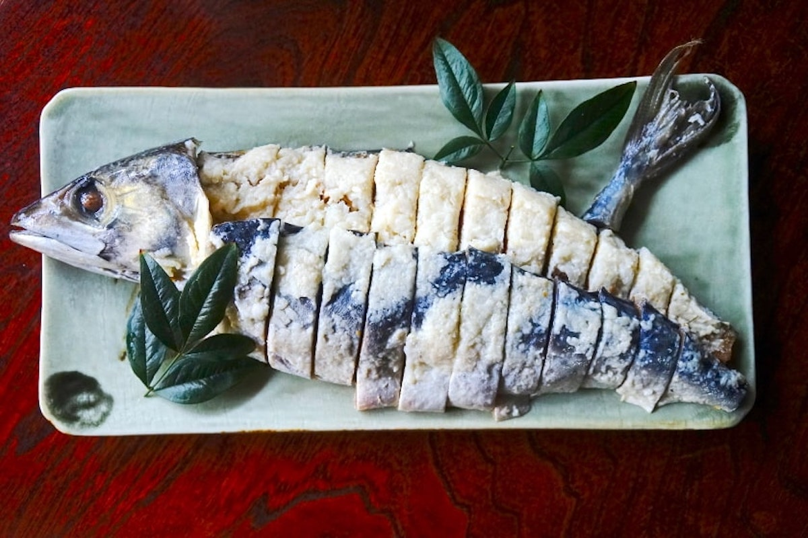
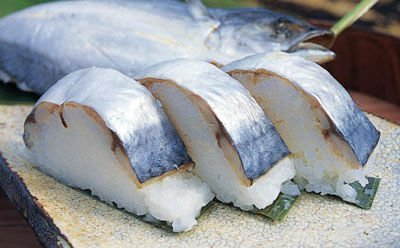
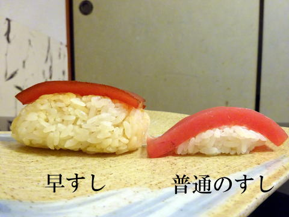
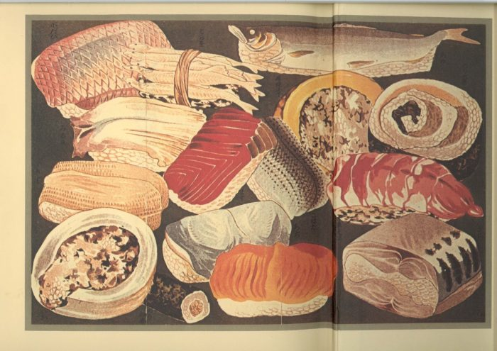
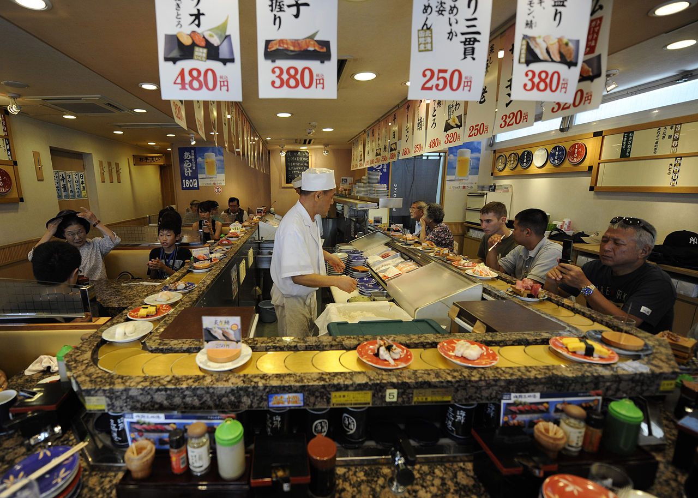
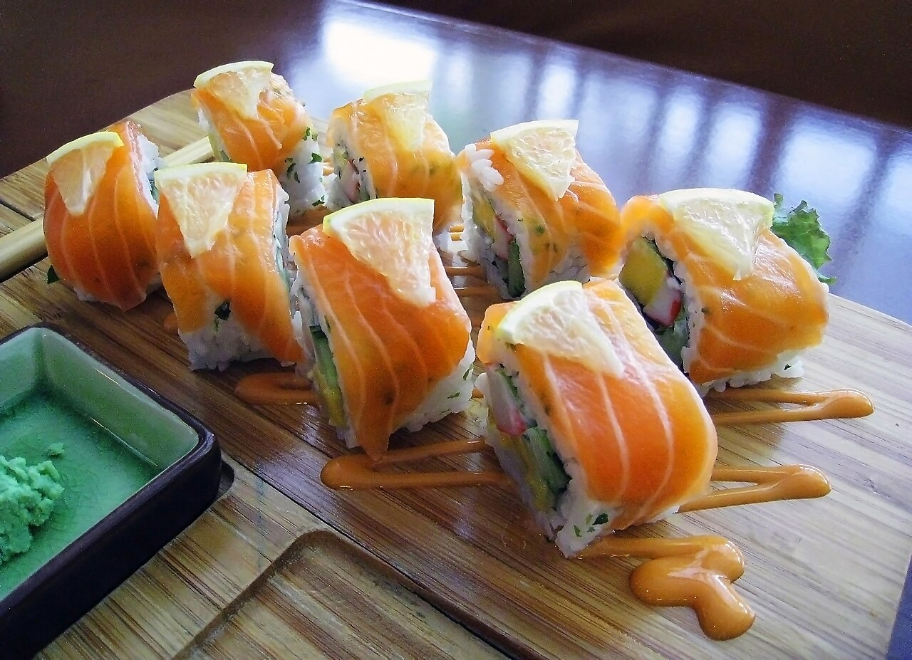

The earliest form of sushi, a dish today known as narezushi, originated in Southeast Asia where it was made to preserve freshwater fish
During the Muromachi period (1336–1573), the Japanese invented a style of sushi called namanare or namanari (生成、なまなれ、なまなり), which means "partially fermented". The fermentation period of namanare was shorter than that of the earlier narezushi, and the rice used for fermentation was also eaten with the fish. In other words, with the invention of namanare, sushi changed from a preserved fish food to a food where fish and rice are eaten together.
During the Edo period (1603–1867), a third type of sushi, haya-zushi (早寿司、早ずし, "fast sushi"), was developed. Haya-zushi differed from earlier sushi in that instead of lactic fermentation of rice, vinegar, a fermented food, was mixed with rice to give it a sour taste so that it could be eaten at the same time as the fish.
Today's style of nigirizushi (握り寿司), consisting of an oblong mound of rice with a slice of fish draped over it, became popular in Edo (contemporary Tokyo) in the 1820s or 1830s. One common story of the origin of nigirizushi origins is of the chef Hanaya Yohei (1799–1858), who invented or perfected the technique in 1824 at his shop in Ryōgoku.
In 1958, Yoshiaki Shiraishi opened the first conveyor belt sushi restaurant (回転寿司, kaiten-zushi) named "Genroku Zushi" in Higashi-Osaka. In conveyor belt sushi restaurants, conveyor belts installed along tables and counters in the restaurant transport plates of sushi to customers.
The increasing popularity of sushi worldwide has resulted in variations typically found in the Western world but rarely in Japan. A notable exception to this is the use of salmon. Other sushi creations to suit the Western palate were initially fueled by the invention of the California roll, a norimaki which presently almost always uses imitation crab (the original recipe calls for real cooked crab), along with avocado and cucumber. A wide variety of popular rolls (norimaki and uramaki) have evolved since.
Sushi is commonly eaten with condiments. Sushi may be dipped in shōyu (soy sauce), and is usually flavored with wasabi, a piquant paste made from the grated stem of the Wasabia japonica plant. Japanese-style mayonnaise is a common condiment in Japan on salmon, pork, and other sushi cuts.
Gari (sweet, pickled ginger) is eaten in between sushi courses to both cleanse the palate and aid in digestion. In Japan, green tea (ocha) is invariably served together with sushi. Better sushi restaurants often use a distinctive premium tea known as mecha. In sushi vocabulary, green tea is known as agari.